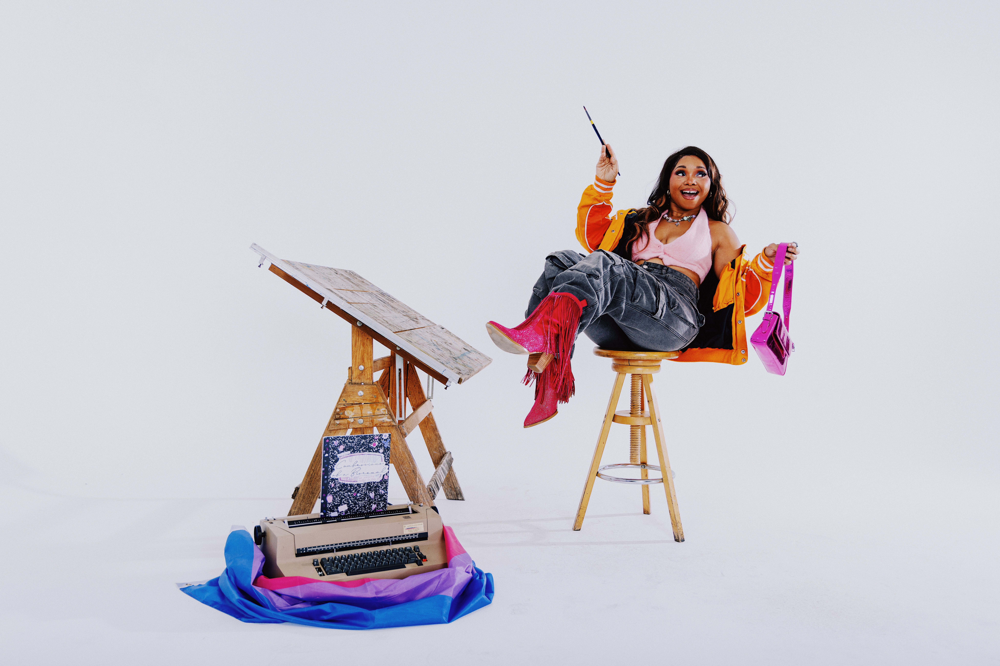
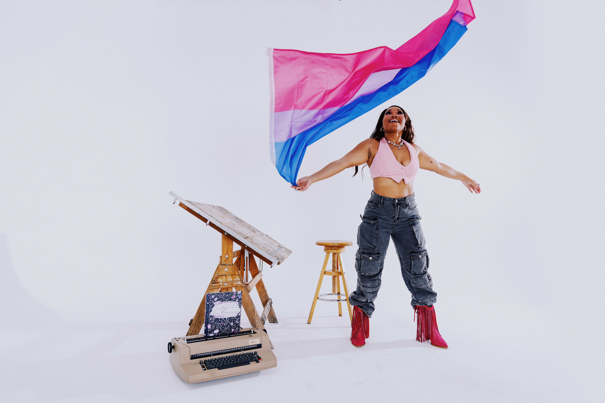

Charmeé Taylor is a bisexual actor, writer, producer, and content creator working across film, digital media, and storytelling platforms.
Her work centers bisexual visibility and the complexity of queer identity, especially for people discovering themselves later in life.
She is the creator of Confessions of a Bisexual and producer of The Good Bi Podcast, both focused on honest, playful, and reflective storytelling.
Originally from State College, Pennsylvania and now based in Los Angeles, Charmeé’s creative path has always been shaped by storytelling and self-exploration.
Creative PracticeHer work blends performance, writing, and digital storytelling to explore identity, relationships, and emotional honesty in modern queer life.
CommunityCharmeé’s projects aim to build visibility and connection for people navigating identity, especially within bisexual and queer communities.
“Storytelling is how I understand myself and the world around me.”
A curated collection of personal and creative moments.
